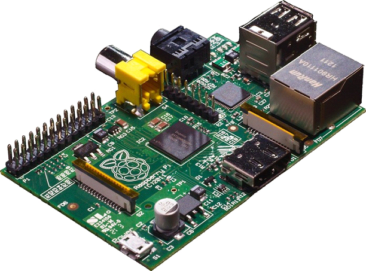
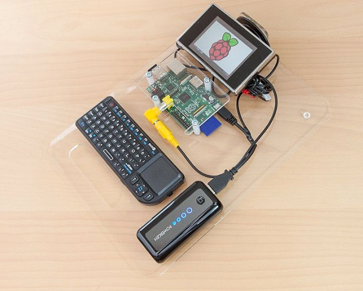
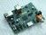

BLÁBLÁBLÁ INFORMÁTICA
Como funciona o Raspberry Pi? Entenda a tecnologia e sua aplicabilidade
Microcomputadores têm sido assunto nos últimos tempos. Dentre os mais surpreendente, está o Raspberry Pi, um aparelho que parece um chip e tem o tamanho de um cartão. Aparentemente, parece impossível chamar isso de computador, né? O TechTudo preparou um texto que irá explicar o que é a tecnologia, como funciona e quais são as suas aplicabilidades.

Raspberry Pi consegue, mesmo minúsculo, oferecer recursos de computadores bem maiores (Foto: Divulgação)
O que é?
Tamanho minúsculo e baixo custo são as duas linhas guias do projeto chamado de Raspberry Pi. Ele é um mini-microcomputador que, no exíguo espaço equivalente a um cartão de crédito, abriga processador, processador gráfico, slot para cartões de memória, interface USB, HDMI e seus respectivos controladores. Além disso, ele também apresenta memória RAM, entrada de energia e barramentos de expansão. Ainda que minúsculo, o Raspberry é um computador completo.
Como funciona?
Não há mistério sobre o funcionamento do aparelho. Como qualquer computador, a grosso modo, ele converte energia elétrica em informações.

Conectado a periféricos, é possível utilizá-lo normalmente (Foto: Reprodução/Geek.com)
Dado o tipo de hardware de baixo consumo, o Raspberry Pi não é o computador ideal para games e para softwares de edição de vídeo, por exemplo. Ao contrário de um poderoso e enorme desktop, ele conta com processadores construídos a partir dos designs ARM, que são ideais para máquinas genéricas, sistemas de controle e unidades que geram menos calor e gastam menos energia.
Apesar da simplicidade, o hardware do Raspberry Pi suporta diversas distribuições Linux e pode reproduzir vídeos de alta definição em uma tela de TV, via saída HDMI. O usuário pode conectar mouse e teclado comuns para usar o computador.Qual a diferença entre versões HDMI 1.3, 1.4 e 2.0? Entenda a tecnologia
O sistema operacional deverá ser instalado em um cartão de memória SD, já que o computador não apresenta disco rígido próprio. Com o sistema operacional, você pode usar o Raspberry Pi para navegar na Internet, escrever textos, ver vídeos, ouvir música, criar planilhas e realizar praticamente qualquer tarefa possível num computador convencional.
Por que?
O Raspberry Pi é fruto de um projeto da fundação de mesmo nome. Com foco educacional, a instituição desenvolveu o computador com o compromisso de simplicidade e preço baixo para que ele pudesse chegar em escolas. Assim, crianças teriam acesso a fundamentos de programação e teriam também um entendimento mais aprofundado sobre a natureza dos computadores e o seu funcionamento.
A Fundação Raspberry Pi consegue diversos componentes da placa a preços abaixo do mercado por conta de parcerias com os fabricantes. Os pequenos computadores contam com um software que ensina princípios de programação.
Tudo a respeito do computador está disponível em código aberto na página da Fundação. Isso permite que terceiros façam suas versões do Raspberry Pi, com modificações que, inclusive, as torne mais baratas e funcionais que o original.Modelos
Há dois modelos de Raspberry Pi: o A e o B. O A tem um hardware um pouco mais simples e é vendido a preços menores, US$ 20 (aproximadamente R$ 50 em conversão direta). Ele conta ainda com 256 MB de memória RAM, uma porta USB e uma Ethernet.
Já o modelo B conta com equipamento de maior capacidade, é um pouco maior e pode ser comprado por US$ 35 (cerca de R$ 88). São 512 MB de RAM e duas portas USB. De resto, tanto processador e demais componentes são iguais em ambos os modelos.No Brasil
Como o Raspberry Pi é barato, no Brasil é possível comprar um desses via importação. Como preço lá fora é abaixo dos US$ 50,há uma boa chance de que você não seja taxado pela Receita durante o processo. Por conta de uma série de problemas alfandegários, o computador não é vendido oficialmente no Brasil.
Linux
Mais notícias
- Computador mais barato do mundo, Raspberry Pi esgota em duas horas
- Inovação e economia: usuário cria tablet a partir de um Raspberry Pi
Veja também
- Saiba o que é GNU e qual seu papel no movimento do software livre
- Aprenda os comandos básicos do Linux
- Como integrar o Google Agenda ao Gnome Shell do Linux
- Chakra Linux: distribuição se destaca pela sua elegância
 Raspberry Pi
- Mais Notícias
- Computador Raspberry Pi agora é do tamanho de uma placa de memória
- Módulo feito com microcomputador permite criar câmeras personalizadas
- Hacker modifica Siri para abrir portas em conjunto com Raspberry Pi
- Raspberry Pi, o menor PC do mundo, alcança dois milhões de unidades vendidas
- Veja também
- Cinco sistemas operacionais para usar no Raspberry Pi
Política de Privacidade::central blablabla.com::assine o blablabla.com:: anuncie conosco
© Copyright 2017-2017 BLÁBLÁBLÁ Comunicação e Participações S.A.